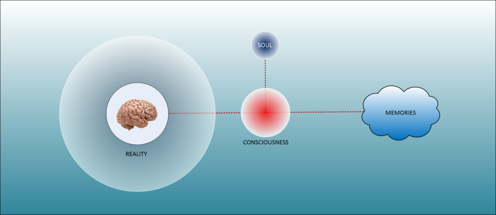
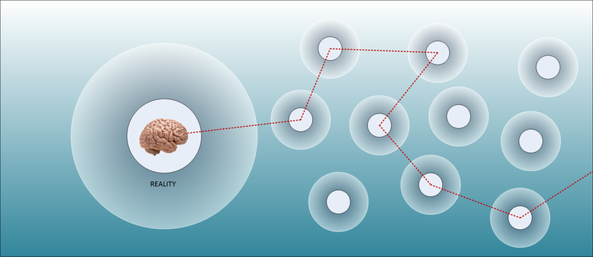
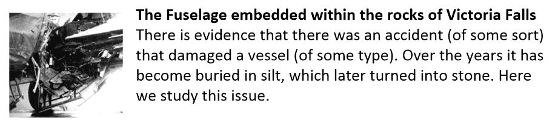
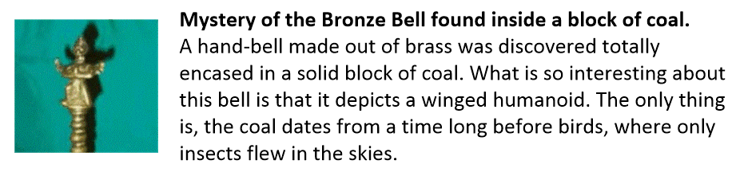
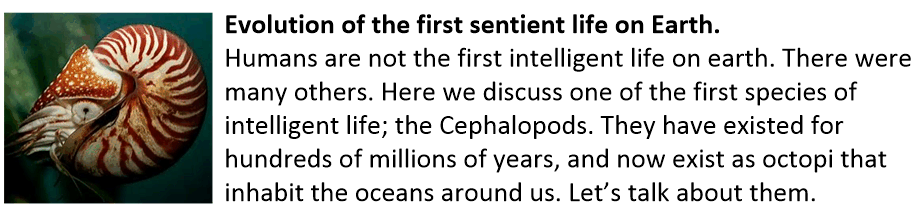
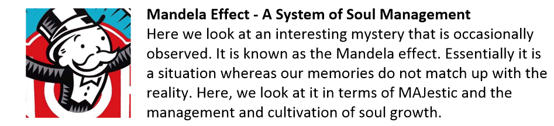
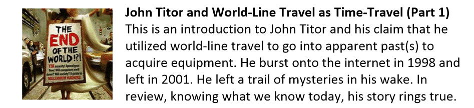

This is a very tiny post. It discusses something that it considered to be very important.
For us to truly grow as a human; as a person, as well as to advance technologically in our universe, we need to understand the fundamental rules of our universe.
Unfortunately, these fundamentals are not at all understood by humans today. They are often considered to be associated with religion and the “soft sciences” instead of their rightful place in the nature of our reality.
To grow, and for our species to master technology, we absolutely need to know what soul is and how it differs from our consciousness. Once we understand this difference, we would be fully able to master so many things that we, today, consider the limitations of our physical universe. Yes. And that means, the ability to travel anywhere in the universe. Yes. And that means the ability to travel to “Heaven” at will while we are alive in the physical, and Yes that means that we would be able to fully appreciate and master the control over our physical world.
Here, we talk about the fundamentals of this issue.
[1] Soul is not Consciousness
Firstly, everything has a soul. But… but, not everything has a consciousness.
A soul can be considered the “stuff” of who we are fundamentally. It is the “ground level” or quantum particles and the “building blocks” of who we are. It is the “brick and mortar” components of our very being.
That chair that you are sitting on has a (very simplistic) soul, but not a consciousness. It does not recognize that you are sitting on it. It does not think. It does not alter the reality surrounding it, and it does not generate memories.
That blade of grass outside also has a soul. It is a more advanced soul than that (human fabricated) chair, but it is still quite simple. It also has a rudimentary consciousness. It might be able to think… to some degree. It might not be able to generate memories or access them. But, we consider it living, because it does has a consciousness.
It’s consciousness drives the animation of the plant. It grows. It seeks and needs sun, water and nourishment. It lives, and then it dies.
Turning to animals, we can see that they have souls, and they have consciousnesses. They might think differently than us, sense things differently, and have different ways of accessing memories, but it is clear that they have a consciousness.
A Soul is…
In short, a soul is a generalized collection of quanta that is associated with one or more consciousnesses. It is a “home” from whence the consciousness originates. [1] It resides in a “place” or a “Heaven” that is beyond the physical distances, and time, and space. [2] It exists independently of any physical reality, or notion of time.
A Consciousness is…
Consciousness, on the other hand, is something that comes forth from the soul. [1] It is tied to “reality” which will include the limitations of time, space, and spacial distances. [2] It is connected to a given reality and thus can be influenced by it. There is always a “give and take” between a reality and a consciousness.
[2] Memories are associated with Consciousness, not Soul.
Memories do NOT reside within the brain, as is conventionally thought. Instead, they are accessed by the brain. They are actually stored outside of our reality.
The creation of memories is via [1] the thoughts and [2] the physical activity of the person inhabiting a physical reality.

Thoughts and memories reside at “the same level” or within the “same space” as the soul. You can call this area or place, or condition, “Heaven” if you wish. It’s a close enough approximation.
Consciousnesses can move about from the “Heaven” that the soul occupies, and the “Heaven” where the memories are stored to the physical universe. This is accomplished by changing from wave to particle properties.
Our reality is a a “destination” that is arrived at due to the physical actions and thoughts of a given consciousness.
[3] Our Soul utilizes the memories that our Consciousness generates to form entanglements with quanta.
One of the biggest questions that humans have asked is “what’s the purpose of our existence?”. Well, there is an answer. We exist to grow, learn and advance.
However, it is more than that.
Our physical bodies are constructions that occupy a physical reality within a “situation”. This situation is picked from a near infinite number of situations in the MWI multiple-reality-worlds of our universe. Our consciousness is placed within a physical body within that reality, and we live the life within that “situation”.

Our thoughts, generated by our physical actions, and our thoughts, act as a steering vector that alters and changes the reality into other realities. All the time, generating thoughts and situations for us to experience, and if need be, endure.
Look back in your own life. Go back ten, twenty, thirty, forty, or even fifty years. Look at your life then and what you thought about; what you dreamed about, and the actions you took. Then…
…fast forward your life to see how the things manifested. You should find that while there are often outside influences involved, many of the things that you thought about that that time manifested one way or the other in your life.
The thoughts, emotions and feelings that we generate within this life goes to a “thought repository”. This repository is used to make and break quantum attachments and entanglements.
Quantum attachments and entanglements create the fabric, shape, size and organization of soul.
[4] Soul organization determines the rate of Soul growth and Soul Abilities.
What most humans do not “get” or understand, is the importance in soul evolution. We kind of think that the soul is fixed and will forever exist in the configuration or shape that it is now.
That is wrong.
Souls evolve. They have always been evolving. They can do so on their own, without creating a consciousness. And, they can also (greatly accelerate the process) do so by using a consciousness involved collecting experiences within a reality.
As souls evolve they transcend the limitations of our universe and achieve far greater abilities. As such, their manifested consciousnesses and spawned realities also increase in scope. From a human perspective, these evolved souls are astounding.
Conclusion
Only when we, as a species, recognize the intimate connection that our thoughts have with the reality that we inhabit, can we even begin to consider leaving this little ball of earth that we call our own.
We would discard the notions that hate, and killing others, and the obtainment of physical possessions distract from our ability to direct our thoughts. Direction, mind you, that is intended to acquire experiences for our soul to utilize.
MAJestic Related Posts – Training
These are posts and articles that revolve around how I was recruited for MAJestic and my training. Also discussed is the nature of secret programs. I really do not know why the organization was kept so secret. It really wasn’t because of any kind of military concern, and the technologies were way too involved for any kind of information transfer. The only conclusion that I can come to is that we were obligated to maintain secrecy at the behalf of our extraterrestrial benefactors.


MAJestic Related Posts – Our Universe
These particular posts are concerned about the universe that we are all part of. Being entangled as I was, and involved in the crazy things that I was, I was given some insight. This insight wasn’t anything super special. Rather it offered me perception along with advantage. Here, I try to impart some of that knowledge through discussion.
Enjoy.









MAJestic Related Posts – World-Line Travel
These posts are related to “reality slides”. Other more common terms are “world-line travel”, or the MWI. What people fail to grasp is that when a person has the ability to slide into a different reality (pass into a different world-line), they are able to “touch” Heaven to some extent. Here are posts that cover this topic.



John Titor Related Posts
Another person, collectively known by the identity of “John Titor” claimed to utilize world-line (MWI egress) travel to collect artifacts from the past. He is an interesting subject to discuss. Here we have multiple posts in this regard.
They are;
